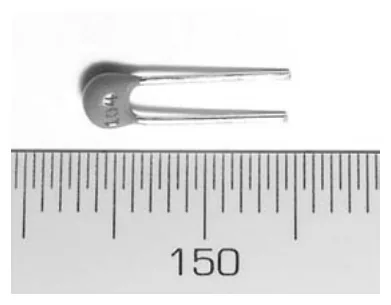
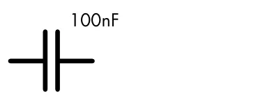
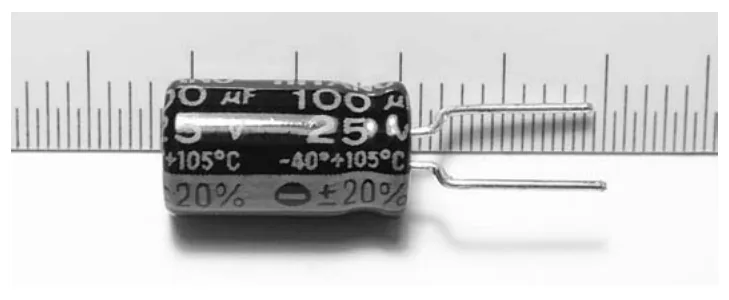
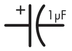

A capacitor is a device that holds an electric charge. It consists of two metal plates with an insulating layer that allows an electric charge to build up between the plates. Once the current is stopped, the charge remains and can flow out of the capacitor (called discharging the capacitor) as soon as the charge voltage stored in the capacitor is presented with a new path for the current to take.
Measuring the Capacity of a Capacitor
The amount of charge that a capacitor can store is measured in farads, and one farad is actually a very large amount. Therefore, you will generally find capacitors with values measured in picofarads or microfarads. One picofarad (pF) is 0.000000000001 of a farad, and one microfarad (μF) is 0.000001 of a farad. Capacitors are also manufactured to accept certain voltage maximums. In this book, we’ll be working with low voltages only, so we won’t be using capacitors rated at greater than 10 V or so; it’s generally fine, however, to use higher-voltage specification capacitors in lower-voltage circuits. Common voltage ratings are 10, 16, 25, and 50 V.
Reading Capacitor Values
Reading the value of a ceramic capacitor takes some practice, because the value is printed in a sort of code. The first two digits represent the value in picofarads, and the third digit is the multiplier in tens. For example, the capacitor shown in Figure 4-12 is labeled 104. This equates to 10, followed by four zeros, which equals 100,000 picofarads/pF (100 nanofarads [nF], or 0.1 microfarads [μF]).

Types of Capacitors
Our projects will use two types of capacitors: ceramic and electrolytic.
Ceramic Capacitors
Ceramic capacitors, such as the one shown in Figure 4-12, are very small and therefore hold a small amount of charge. They are not polarized and can be used for current flowing in either direction. The schematic symbol for a nonpolarized capacitor is shown in Figure 4-13.

Ceramic capacitors work beautifully in high-frequency circuits because they can charge and discharge very quickly due to their small capacitance.
Electrolytic Capacitors
Electrolytic capacitors, like the one shown in Figure 4-14, are physically larger than ceramic types, offer increased capacitance, and are polarized. A marking on the cover shows either the positive (+) side or negative side (–). In Figure 4-14, you can see the stripe and the small negative (–) symbol that identifies the negative side. Like resistors, capacitors also have a level of tolerance with their values. The capacitor in Figure 4-14 has a tolerance of 20 percent and a capacitance of 100 μF.

The schematic symbol for electrolytic capacitors, shown in Figure 4-15, includes the + symbol to indicate the capacitor’s polarity.

Electrolytic capacitors are often used to store larger electric charges and to smooth power supply voltages. Like a small temporary battery, they can provide power-supply smoothing and stability near circuits or parts that draw high currents quickly from the supply. This prevents unwanted dropouts and noise in your circuits. Luckily, the values of the electrolytic capacitor are printed clearly on the outside and don’t require decoding or interpretation.
Now that you have experience generating basic forms of output using LEDs with your Arduino, it’s time to learn how to send input from the outside world into your Arduino using digital inputs and to make decisions based on that input.